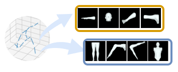
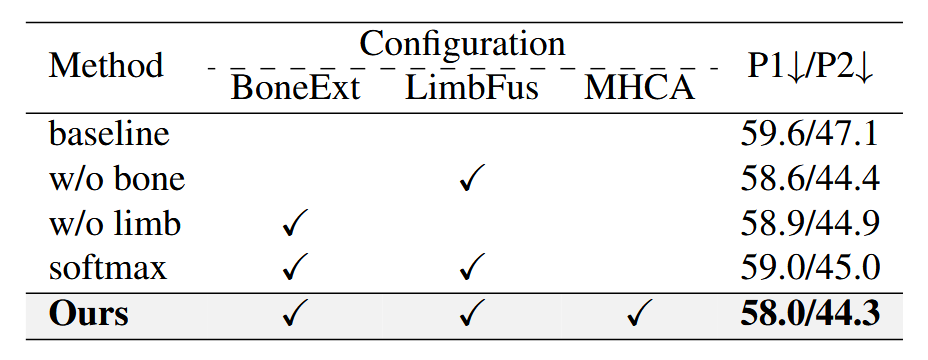

Recently, transformer based approaches have demonstrated convincible performance in solving real-world 3D Human Pose Estimation problems. Albeit these excellent approaches achieve fruitful results on benchmark datasets, they tend to fail on sports videos whose movements are more complicated than daily life actions.
Moreover, due to the difficulty in capturing 3D sports pose data and the fact that critical actions in a sports game often appear in moments of time (e.g. shooting), current 3D pose estimation models appear to lack the analyzing ability when encountered with short sports videos.
In this paper, we present the Bone extractor (BoneExt) and Limb fuser (LimbFus) modules, which decomposes bone length and directions from joint input and exploits potential kinematic dependencies of sports actions through a multimodality manner. Through composing an anatomy feature into a Spatio-temporal Transformer, we propose KASportsFormer, which exhibits an improved capability of comprehending underlying human sports pose with temporal limitations.
We evaluate our methods through two representative sports scene datasets: SportsPose and WorldPose. Our proposed method achieves state-of-the-art results with MPJPE errors of 58.08 mm and 34.37 mm, respectively.
We frist extract the bone expression inside the original coordinates.
We then compose extracted bones into various limbs, including biological ones and hypothetical ones.

We treat the extractd bone and reconstructed limb as different context and thus we study their interations with a multimodality manner.
The overall proprocessing pipeline of our proposed methods:
We compare our proposed method with two sports motion centered datasets.
We first compare our proposed method with concurrent 3D Human Pose Estimation methods on SportsPose Datasets.
We also apply a comparison on each action category within the SportsPose Dataset.
To demonstrate the capability of sports applications, we additionally adopt a Soccer Game focused human pose dataset called WorldPose, and compare our proposed method with other works.
Experiments on different configurations of our proposed method.

Experimetns on different parameters of our LimbFus module.
Qualitative comparisons of our KASportsFormer with MotionAGFormer and D3DP on activities of SportsPose with detected inputs.
The gray skeleton is the ground truth 3D pose. The blue skeleton represents the estimated 3D pose result. The red dashed line indicates the incorrect regions of the compared methods, and the blue dashed line represents the couterparts of our proposed method.
If you find our work useful, please cite the paper
@inproceeding{yin2025kasportsformer,
author = {Zhuoer Yin, Calvin Yeung, Tomohiro Suzuki, Ryota Tanaka},
title = {KASportsFormer: Kinematic Anatomy Enhanced Transformer for 3D Human Pose Estimation on Short Sports Scene Videos},
journal = {???},
year = {2025},
}You can also check out our concurrent sports-centered human pose analysis works.
AthletePose3D (AP3D) is a novel dataset for monocular 3D human pose estimation in sports biomechanics, designed to capture high-speed, high-acceleration movements. Alongside the raw dataset, we also provide a training-ready version prepared for 2D and 3D pose estimation modeling, including both preprocessed annotations and AP3D fine-tuned model parameters.
AutoSoccerPose is a pipeline aimed at semi-automating 2D and 3D pose estimation and posture analysis. While achieving full automation proved challenging, we provide a foundational baseline, extending its utility beyond the scope of annotated data.
Pseudo-label based unsupervised fine-tuning of a monocular 3D pose estimation model for sports motions is an accurate and convenient sports motion capture system based on un-supervised fine-tuning.
FS-Jump3D is the first figure skating jump dataset that includes both 3D pose data and video data from 12 viewpoints. The jump data were captured using the markerless motion-capture system (Theia3D, Theia) by positioning 12 high-speed cameras (Miqus Video, Qualisys) on the ice skating rink.
Our work refers to and builds on the following repositories and datasets:
We appreciate the authors for their invaluable codes release and we also thank the authors' contribution to sports pose data creation